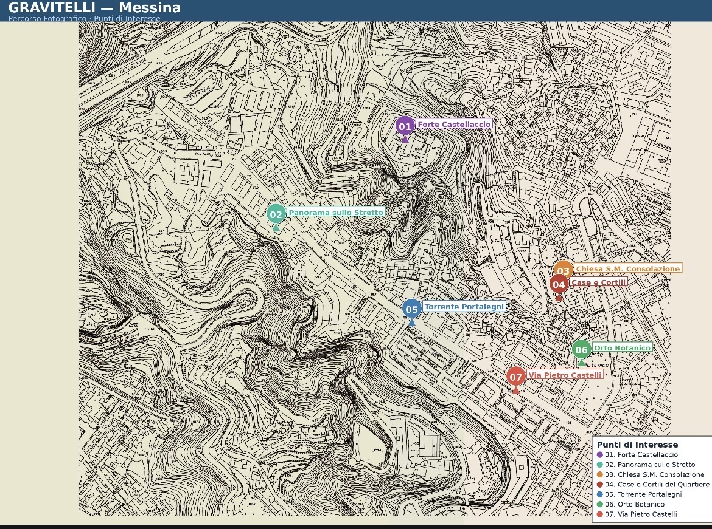

Istituto Comprensivo Paino · Messina ·
Classe 3C · Anno scolastico 2025/2026
Un viaggio fotografico nel quartiere, ispirato a
"I Briganti di Librino" di Sara Rattaro
Il quartiere
Gravitelli è un quartiere collinare di Messina, sospeso tra il mare e il verde dei Peloritani. Come Librino nel romanzo di Sara Rattaro, è un luogo che porta i segni del tempo, fatto di strade strette, palazzi popolari e scorci inaspettati. Un quartiere che ha una sua anima — spesso invisibile a chi non lo conosce — e che noi abbiamo scelto di raccontare attraverso gli occhi e la macchina fotografica.
"I luoghi parlano a chi sa ascoltarli. Ogni muro, ogni vicolo, ogni sguardo è una pagina di storia." — Classe 3C IC Paino
Sara Rattaro
Il romanzo racconta la storia di ragazzi che vivono a Librino, quartiere difficile di Catania, e della loro lotta quotidiana per costruire un futuro diverso. Un libro che parla di identità, appartenenza e riscatto.
Radici e memoria
Prima di chiamarsi Gravitelli, questo territorio era noto come Portalegni — nome che richiama una porta della cinta muraria medievale attraverso cui i cittadini esercitavano il diritto di raccogliere legna nei boschi della collina. Lungo lo stesso percorso scorreva la fiumara omonima, le cui acque raggiungevano il porto della città.
Il nome Gravitelli deriva invece dall'antico eremo della Madonna delle Gravidelle, venerato dalle donne in gravidanza fin dal Seicento. Come scriveva nel 1644 il padre gesuita Placido Samperi, le donne messinesi "nelle loro gravidanze, ò nella difficoltà de' loro parti, haveano singolar ricorso à questa Sacra Imagine". Il toponimo si è trasformato nel tempo fino alla forma attuale.
Fino al terremoto del 1908 Gravitelli era una zona agricola collinare. Dopo il sisma, i terreni lungo la fiumara coperta furono adibiti a baracche per gli sfollati. Nel dopoguerra le baracche lasciarono il posto alle case popolari, e il quartiere assunse la forma che vediamo ancora oggi.
A vegliare su Gravitelli dall'alto, a 150 metri sul livello del mare, sorge il Forte Castellaccio — la più antica struttura fortificata di Messina. Le sue origini si perdono nel periodo preellenico; ricostruito nel XVI secolo per volere di Carlo V dall'architetto bergamasco Antonio Ferramolino, fu per secoli simbolo del potere militare della città. Nel 1674 i messinesi lo conquistarono durante la rivolta antispagnola. Poi venne il terremoto del 1908, poi la guerra — e poi l'abbandono.
Nel 1949 il Castellaccio tornò a vivere grazie a Padre Nino Trovato, sacerdote messinese che lo trasformò in "Villa Pia", poi ribattezzata Città del Ragazzo: un luogo di accoglienza per orfani e ragazzi in difficoltà, che qui trovarono una casa, un lavoro, una comunità.
Oggi — Rigenerazione urbana
Nel novembre 2025 l'Agenzia del Demanio ha concesso gratuitamente il Forte Castellaccio alla Città Metropolitana di Messina per quindici anni. Il progetto di rigenerazione — finanziato con oltre 55 milioni di euro attraverso i Piani Urbani Integrati del PNRR — prevede il restauro della fortezza e la sua trasformazione in un polo culturale e giovanile chiamato ancora una volta La Città del Ragazzo: musei, mostre, spazi per la formazione e la creatività. Il quartiere di Gravitelli, con le sue aree verdi e gli impianti sportivi, sarà parte integrante di questo riscatto urbano.
Il territorio
Vista satellite
Vista dall'alto del quartiere Gravitelli, Messina.
Carta topografica storica

Carta topografica di Gravitelli con i punti di interesse del percorso fotografico: Forte Castellaccio, Panorama sullo Stretto, Chiesa di S.M. Consolazione, Case e Cortili, Torrente Portalegni, Orto Botanico, Via Pietro Castelli.
Le nostre fotografie
Uno sguardo giovane su un quartiere antico.
Lettura e territorio
Leggere "I Briganti di Librino" ci ha dato nuovi occhi per guardare Gravitelli. Ecco i temi del romanzo che abbiamo ritrovato nel nostro quartiere.
Come i protagonisti di Librino, anche noi apparteniamo a un luogo preciso. Le strade di Gravitelli fanno parte di chi siamo.
Muri scrostati, scale consumate, palazzi antichi: ogni quartiere porta i segni della sua storia.
Nel romanzo la forza nasce dal gruppo. A Gravitelli le persone che si conoscono, si aiutano, condividono spazi.
Sara Rattaro racconta che cambiare è possibile. Le nostre foto cercano di mostrare anche la bellezza nascosta del quartiere.